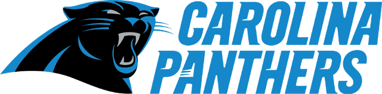
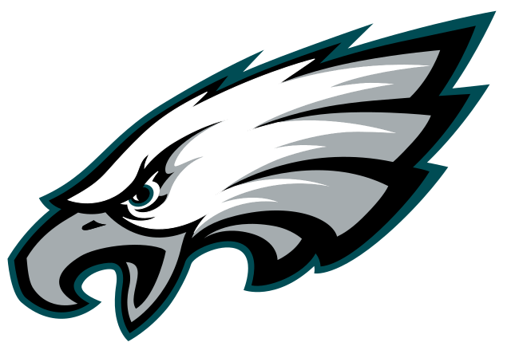

History: The New York Giants were founded in 1925 by Tim Mara the grandfather of current owner John Mara. The Giants won their first Championship in just their 3rd year of playing. They went on to win 3 more NFL championships one in 1934, one in 1938, and one in 1956. They then experianced a long period filled with tough losses (including a championship lose in 1958 in the greatest game ever player). The Giants luck began to turn around when they drafted Lawrence Taylor, considered by many to be one of the greatest players of all time, in 1981 to play linebacker. They went on to win a Superbowl in 1985 and another in 1990. The Giants experianced another draught in the 90's that was ended in 2000 when they returned to the superbowl but were beaten badly by the Ravens. The Giants again experianced a rebirth when they aquired Eli Manning in a draft day trade with the Chargers. Eli has lead the Giants to 2 superbowl victories in 2007 and 2011. The superbowl in 2007 is remembered as one of the biggest upsets in sports history as the Giants beat the 18-0 Patriots to end their perfect season.
Notable Historic Figures: Sam Huff, Y.A Tittle, Michael Strahan, Phill Simms, Fran Tarkenton, Tom Landry, Bill Parcels, Bill Belicheck, Tom Caughlin, Jumbo Elliot, Spider Lockhart, Carl Banks Roosevelt Grier, Lawrence Taylor, Frank Gifford, Harry Carson, Rosey Brown Notable Current Players: Eli Manning, Odell Beckham Junior, Janoris "Jackrabbit" Jenkins, Landon Collins, Olivier Vernon, Zak DeOssie, Brandon Marshall
History: The Carolina Panthers were founded in 1993 by Jerry Richardson. The Panthers first head coach was Dom Capers who was the defensive coordinator of the Steelers at the time. The Panthers built their team through the draft and free agency and won their first game after starting 0-5 against the Jets. That season they didn't win a lot of games but did win 4 games in a row at one point and they were able to beat the reigning champion 49ers. The next season they were able to make it into the playoffs and even won a game but were beaten the next week by the eventual super bowl champion Packers. In 2003 the Panthers were able able to make it back to the Superbowl but lost the Patriots. The Panthers were only ever able to manage some early exits in the next 12 years. In 2011 the Panthers drafted Cam Newton who lead them back to the superbowl in 2015 where they lost to the Broncos.
Notable Historic Figures: Steve Smith, Julius Peppers, Mushin Muhammed, Sam Mills, Jake Delhomme, Kerry Collins, Dan Morgan, Charles "Peanut" Tillman, Will Witherspoon, Ricky Manning Jr Notable Current Players: Cam Newton, Luke Kuechly, Greg Olsen, Kelvin Benjamin, Thomas Davis,
Reason why:
History: The Eagles were founded in 1933 by the Bell-Wray group after the former Philadelphia franchise the Yellow Jackets shut down. In 1944 the Eagles had their first winning season and the next 2 years they finished in second place. In 1947 the Eagles made it all the way to the championship game but came up short against the Cardianls. The very next year the Eagles acheived a perfect record and made it back to the championship where they defeated the Cardinals. The next season they made it back to the championship for the third straight years and won again. The 30 years of Eagles history was filled with bad losses and injuries to important players with a couple of semi succesful seasons mixed in. In 1980 lead by Ron "Jaws" Jaworski the Eagles made it all the way to the super bowl as the first seed in the NFC. However, they were upset by the underdog Raiders in an embarrassing 27-10 loss. The Eagles experienced some success in the rest of the 80's and 90's but did not make it back into the Superbowl unitl 2004. In 2004 the Eagles lead by head coach Andy Reid and quarterback Donovan McNabb as well as wide reciever Terrell Owens the Eagles made it back to the super bowl but were beat by the Patriots on a last second field goal.
Notable Historic Figures: Dick Vermeil, Buddy Ryan, Herm Edwards, Ron Jaworski, Terell Owens, Bryan Dawkins, Brian Westbrook, Reggie White, Randall Cunningham, DeSean Jackson, Steve Van Buren, Al Wistert, Wilbert Montgomery Notable Current Players: Carson Wentz, Darren Sproles, Alshon Jeffery, Zach Ertz, Fletcher Cox, Jordan Hicks